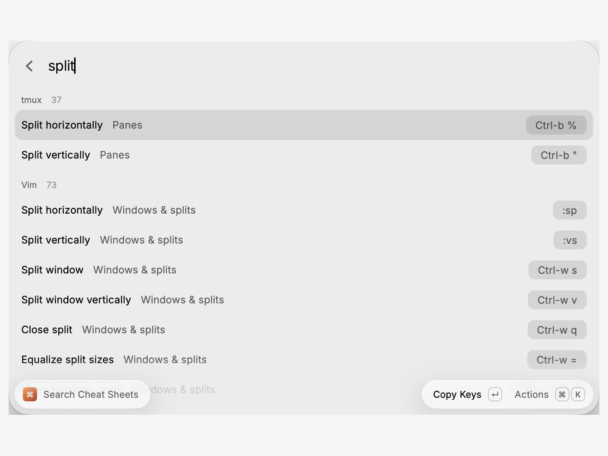

Holding ⌘ to see an app's shortcuts is free and always will be. What Keysi Pro adds is reaching Keysi from somewhere else: a launcher, a terminal, an automation, so the answer can leave Keysi and land where you were already working.
The app has all of this built in: open Integrations from the Keysi menu bar icon and it will tell you which of these are ready on your Mac and which need a step. This page is the same information, for reading before you buy.
Search any app's shortcuts, run one, or open Practice without leaving Raycast. The extension asks the Keysi app to do the work, because a Raycast extension cannot read another app's menus itself, but the app that already can is right there.
The extension is waiting on Raycast Store review (submitted 11 September 2026), and ships when Raycast merges it rather than when Keysi ships. Everything else on this page works the moment you install Keysi. Said plainly because it is part of what Pro costs, and a feature you cannot install yet should not be described as though you can.

Three keywords:
ks shows the shortcuts panel, optionally with a search already typed (ks save as).kspractice opens Practice Mode.ksexport exports an app's shortcuts.The workflow is three keyword objects wired straight to Open URL actions. No scripting, nothing that can drift from the app, and nothing in it can do anything you could not do by typing open keysi://show yourself.
Keysi ships a keysi command inside the app bundle, so it is always the version matching the app you have installed. Put it on your PATH:
sudo ln -sf /Applications/Keysi.app/Contents/Resources/keysi-cli.sh /usr/local/bin/keysiThen:
keysi show # the panel for the app you were last in
keysi show save as # ...with the search already filled in
keysi practice # open Practice Mode
keysi progress # open Your Keysi
keysi integrations # this list, inside the app
keysi export Figma # export an app's shortcuts (opens a save panel)The app's Integrations window will hand you that first command with the right path already in it. Keysi will not write into a directory on your PATH itself, and it does not run anything to work out whether the link is there.
Keysi's App Intents let a Shortcuts workflow find and run menu commands, which also makes them available to Spotlight actions and to Siri. Nothing to install — they appear in Shortcuts once Keysi is running.
Your custom cheat sheets are indexed, so a Vim or tmux binding turns up in an ordinary Spotlight search. Nothing to set up.
Select a command name in any app, then Services ▸ Search Shortcuts in Keysi, and Keysi answers "what's the shortcut for this?" against the app you were in. macOS lists it once Keysi has run; you can give it a keyboard shortcut of its own in System Settings ▸ Keyboard ▸ Keyboard Shortcuts ▸ Services.
Keysi writes the frontmost app's whole cheat sheet out to a file: Markdown for a wiki or a repo, a printable PDF for the wall, or a desktop picture sized to the screen you're saving from, so the shortcuts sit behind your windows.
Reach it from the menu bar item, from Shortcuts via Export Shortcuts, from the terminal with keysi export Figma, or from a keysi://export URL. However it's triggered, macOS's own save panel opens and you pick the location and the format — which is what keeps a one-way URL surface safe: nothing can make Keysi write a file on its own.
All of the above is part of Keysi Pro: $19.99 once, with a 14-day trial. Nothing that was free became paid to make room for it: the overlay, the hotkey, click-to-run, custom sheets, search and the conflict warnings are exactly as free as they have always been, and stay that way. Reaching Keysi from another app is a new capability that arrived in the paid tier, not a fence built around an old one.
Every one of these is Keysi Pro, $19.99 once. Each install starts with 14 days of it, and the cheat sheet itself stays free either way.